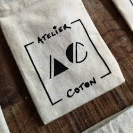

L'atelier Coton
Actuellement rédactrice web pour le site Zéro déchet de Lyon, vous trouverez ci dessus un des articles que j'ai pu écrire.
L’Atelier coton, des textiles éthiques et éco-responsables

Une histoire de complémentarité !
Pour en savoir plus sur cet atelier, nous sommes parties à la rencontre de Marion et Romain, deux vieux amis engagés dans le textile éco-responsable.
Il y a quelques années, Romain produisait des collections de vêtements en coton pour des marques françaises au sein de son équipe basée en Inde. Un client avait besoin en urgence d’une toute petite production de tote-bag, ce qui n’était pas faisable au sein de l’usine. Romain s’est donc tourné vers son amie Marion, alors bénévole dans un petit atelier lyonnais de sérigraphie, pour l’aider à réaliser cette commande.
Ensemble, ils réussirent à imprimer les tote-bags dans l’atelier de Marion. Le résultat fut de qualité pour un prix tout à fait convenable, ce qui plut énormément au client.
Fort de ce succès, ils se sont alors questionnés sur la possibilité de proposer une offre textile en coton biologique responsable. Après quelques mois leurs travail aboutit à la création d’une entreprise de sérigraphie zéro déchet et éco-responsable. Mai 2018, L’atelier Coton était né !
Une gamme de produits variés
L’atelier coton propose de vous accompagner dans votre démarche zéro déchet grâce à une gamme de produits réutilisables remplaçant avec panache les sacs plastiques et autres contenants jetables.
Tote-bags, sacs en coton bio, cabas, pochons, sacs à vrac, autant d’accessoires disponibles que vous pourrez personnaliser en sérigraphie. De plus, ils proposent également des tabliers, des teeshirts et des sweat-shirts.
Afin que l’atelier soit éco responsable, quelques règles à respecter ont été établies :
Tous leurs supports textiles sont en coton certifié biologique GOTS Ecocert.
Tous leurs sacs sont fabriqués spécialement pour l’Atelier Coton pour une traçabilité optimale et une qualité constante, il n’y a donc pas d’intermédiaire !
Toutes leurs impressions sont réalisées à la main en sérigraphie.
100% de leur activité est réalisée à Lyon dans leur atelier (69007)
Enfin, ils n’utilisent que des encres « propres » pour leurs impressions : base aqueuse sans solvants ni métaux lourds, également fabriquées en France à Poncin (01).
Ces règles sont importantes et permettent de réduire leur impact écologique, pour le plus grand bonheur de la planète et de leurs clients.
De plus, ils ont aussi mis quelques actions en place pour rendre l’atelier aussi zéro déchet que possible. Ils trient les déchets, compostent les déchets organiques et utilisent des éclairages LED. Quelques actions que tout le monde peut intégrer dans sa vie quotidienne.
L’atelier Coton c’est donc deux amis qui ont décidés de revenir à des choses plus simples, plus vraies pour donner du sens à leur activité !
Vous pouvez les retrouver au 3 rue Chalopin, 69007 Lyon, Métro Saxe Gambetta à proximité de l’avenue Jean Jaurès ! Ou par mail : hello@ateliercoton.com